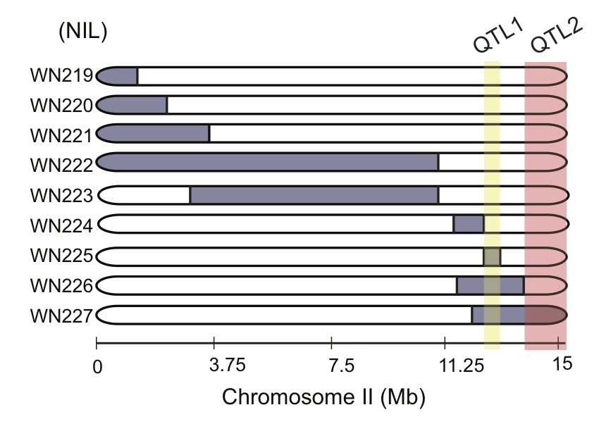
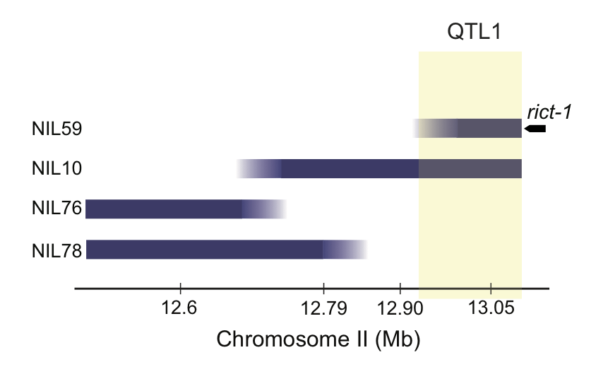
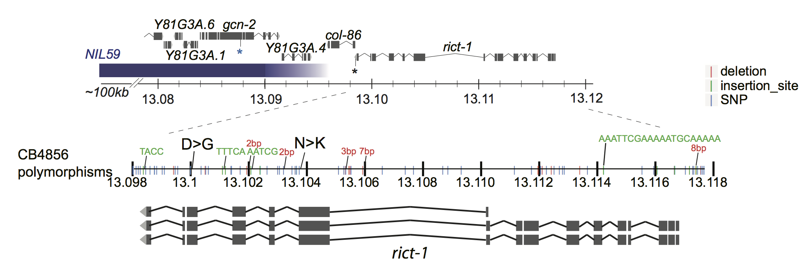

Figure 7
Identification of two QTL for 27º dauer formation
7A
filepath<-file.path(pathname,'extdata/7A_CSSdata_allbinary.csv')
strains<- c("N2","CB4856","CSSI","CSSII","CSSIII","CSSIV","CSSV","CSSX")
foods <- "OP50"
CSS<-read.csv(filepath, header=TRUE) %>% format_dauer(p.dauer = "exclude") %>% dplyr::filter(n > 9)lm <- CSS %>% dauer_ANOVA()
glmm.locus <- glmer(CSS,formula = cbind(dauer,non) ~ gtChrI + gtChrII + gtChrIII + gtChrIV + gtChrV + gtChrX + (1|plateID) + (1|strainDate), family = binomial(link = logit),control=glmerControl(optimizer="bobyqa"))
contrasts<-dauergut::dunnett_contrasts(lm, ref.index = 1, "genotype")
plot.contrasts<-c("",contrasts$prange[1:7])
stan.glmm <- CSS %>% run_dauer_stan
mixed<- stan.glmm %>% getStan_CIs(type = "dauer") #CIs
(p<-dauergut::plot_CIs(CSS, title='CB4856 Chromosome II contains 1 or more dauer QTLs', plot.contrasts, ypos = 1.075, type = "dauer", labels = strains))
7A. Chromosome substitution strains identify a chromosome II QTL for 27º dauer formation. Dauers formed by chromosome-substituted strains at 27°C. Each dot indicates the proportion of dauers formed in a single assay. Horizontal bar indicates median. Light gray thin and thick vertical bars at right indicate Bayesian 95% and 75% credible intervals, respectively. Numbers in parentheses below indicate the number of independent assays with at least 11 animals each. Shown P-values are with respect to the Bristol N2 strain unless indicated otherwise; *** - different from Bristol N2 at P<0.001 (ANOVA with Dunnett-type multivariate-t post-hoc adjustment).
library(sjPlot)
sjt.lm(lm, depvar.labels = "proportion of dauers", show.se = TRUE)| proportion of dauers | |||||
| B | CI | std. Error | p | ||
| (Intercept) | 0.38 | 0.24 – 0.51 | 0.07 | <.001 | |
| genotype | |||||
| CB4856 | -0.36 | -0.54 – -0.18 | 0.09 | <.001 | |
| CSSI | 0.06 | -0.15 – 0.28 | 0.11 | .552 | |
| CSSII | -0.29 | -0.48 – -0.11 | 0.09 | .003 | |
| CSSIII | -0.06 | -0.26 – 0.13 | 0.10 | .517 | |
| CSSIV | -0.14 | -0.33 – 0.06 | 0.10 | .158 | |
| CSSV | 0.13 | -0.08 – 0.35 | 0.11 | .218 | |
| CSSX | -0.11 | -0.30 – 0.09 | 0.10 | .272 | |
| Observations | 47 | ||||
| R2 / adj. R2 | .522 / .436 | ||||
sjt.glmer(glmm.locus, depvar.labels = "proportion of dauers", show.se = TRUE)| proportion of dauers | |||||
| Odds Ratio | CI | std. Error | p | ||
| Fixed Parts | |||||
| (Intercept) | 0.01 | 0.00 – 0.05 | 0.01 | <.001 | |
| gtChrI (N2) | 0.87 | 0.30 – 2.49 | 0.47 | .798 | |
| gtChrII (N2) | 13.34 | 4.41 – 40.33 | 7.53 | <.001 | |
| gtChrIII (N2) | 1.62 | 0.59 – 4.40 | 0.83 | .347 | |
| gtChrIV (N2) | 2.52 | 0.92 – 6.90 | 1.30 | .072 | |
| gtChrV (N2) | 0.64 | 0.20 – 2.06 | 0.38 | .451 | |
| gtChrX (N2) | 2.83 | 0.98 – 8.16 | 1.53 | .055 | |
| Random Parts | |||||
| τ00, plateID | 0.286 | ||||
| τ00, strainDate | 0.581 | ||||
| NplateID | 45 | ||||
| NstrainDate | 23 | ||||
| ICCplateID | 0.069 | ||||
| ICCstrainDate | 0.140 | ||||
| Observations | 47 | ||||
| Deviance | 23.557 | ||||
knitr::kable(drop1(glmm.locus, test = "Chisq"))| Df | AIC | LRT | Pr(Chi) | |
|---|---|---|---|---|
| NA | 255.8060 | NA | NA | |
| gtChrI | 1 | 253.8717 | 0.0656622 | 0.7977605 |
| gtChrII | 1 | 269.9765 | 16.1704903 | 0.0000579 |
| gtChrIII | 1 | 254.6654 | 0.8593609 | 0.3539176 |
| gtChrIV | 1 | 256.7430 | 2.9369918 | 0.0865718 |
| gtChrV | 1 | 254.3687 | 0.5626294 | 0.4532027 |
| gtChrX | 1 | 257.5262 | 3.7201793 | 0.0537586 |
S4A
filepath <- file.path(pathname, "extdata/S4A_CSSII_ascr5.csv")
strains = c("N2","CSSII")
CSSII.C3 <- read.csv(filepath, header =TRUE) %>% dauergut::format_dauer(p.dauer = "exclude") %>% mutate(pheromone = factor(pheromone, levels = c("control","C3")))
lm <- CSSII.C3 %>% lm(., formula = pct ~ genotype*pheromone)
contrasts<-dauergut::dunnett_contrasts(lm, ref.index = 1, factor = "genotype", interaction = "pheromone")
plot.contrasts<-c(rep("",4))
(p<-ggplot(CSSII.C3, aes(x=pheromone)) +
stat_summary(aes(y=pct, group=day), colour = "black", fun.y = mean, geom = "line", alpha = 0.2, linetype = 2) +
add.median.dauer() +
#add.Bayes.CI() +
geom_dotplot(aes(y=pct, colour = pheromone, fill=pheromone),binwidth=.015, binaxis="y", position="dodge", stackdir="center", size =.3) +
scale_color_manual( values = c("black","blue")) +
scale_fill_manual(values = c("black","blue")) +
labs(title = "Pheromone-induced dauer is not altered in CSSII",
y = "proportion dauer",
x = "pheromone") +
facet_grid(.~genotype, switch="both") +
#scale_colour_manual(values = c("black", "#FF9933")) +
#scale_fill_manual(values = c("black", "#FF9933")) +
scale_y_continuous(breaks=c(0,0.25,0.5,0.75, 1.0)) +
scale_x_discrete(labels=function(x) sub(" ","\n",x,fixed=TRUE)) +
#geom_text(data = plot.contrasts.H0, aes(x=2, label = prange, y = 1.075, group = NULL), size = 4) +
stat_summary(aes(x=as.numeric(as.factor(pheromone)) + 0.3, y=-0.05),
fun.data = fun_length, geom = "text", size = 3) +
theme_my_classic +
theme(axis.title.x = element_blank(),
axis.text.x = element_blank(),
strip.text.x = element_text(size=10)))
Figure S4A
Pheromone-induced dauer formation is not reduced in the CSSII strain. Each dot indicates the average number of dauers formed in a single assay. Horizontal bar indicates median. Numbers in parentheses below indicate the number of independent experiments with at least 40 animals each.
7C
filepath<-file.path(pathname, "extdata/7C_ewIRdata_allbinary.csv")
strains=c("N2","CB4856","ewIR19","ewIR20",
"ewIR21","ewIR22","ewIR23","ewIR24",
"ewIR25","ewIR26","ewIR27")
ewIR<-read.csv(filepath, header=TRUE) %>% format_dauer(p.dauer = "exclude") %>% dplyr::filter(n > 9)
ewIR.nocont<-subset(ewIR, !(genotype %in% c("N2","CB4856")))
mapping<-read.csv(file.path(pathname, 'extdata/7C_chrII.markers.concise.csv'))
mapping.nocont<-subset(mapping, !(genotype %in% c("N2","CB4856")))
mapping.nocont$other.loci<-NULL
ewIR<-merge(ewIR, mapping, by="genotype", all=TRUE)
ewIR.nocont<-merge(ewIR.nocont, mapping.nocont, by="genotype", all=TRUE)#glmm.nest = glmer(data = ewIR, cbind(dauer,non) ~ genotype + (1|day/plateID), family="binomial",control=glmerControl(optimizer="bobyqa"))
lm <- ewIR %>% dauer_ANOVA()
contrasts<-dauergut::tukey_contrasts(lm, "genotype")
stan.glmm <- ewIR %>% run_dauer_stan
mixed<- stan.glmm %>% getStan_CIs(type = "dauer")
plot.contrasts<-c("",contrasts$prange[1:10])
# get contrasts compared to ewIR25
#plot.contrasts.2<-c("","",contrasts$prange[c(25,32,38,43,47,50)], "", contrasts$prange[53:54])
plot.contrasts.2 <- c(rep("",9),contrasts$prange[53:54])
labels <- c("N2","CB4856","WN219","WN220",
"WN221","WN222","WN223","WN224",
"WN225","WN226","WN227")
(p<-dauergut::plot_CIs(ewIR, title='CB4856 27º dauer formation QTL lies on ChrII', plot.contrasts, plot.contrasts.2 = plot.contrasts.2,ypos = 1.075, offset = 0.075, type = "dauer", labels = labels))
img.path <- file.path(pathname, "figures/7B_ewIR_map.png")
include_graphics(img.path)
7C. Chromosome near isogenic lines (NILs) were tested for 27º dauer formation. Each strain contains a segment of CB4856 DNA (blue, right) introgressed into an N2 background. EwIR25 contains a QTL which reduces dauer formation. ewIR27 contains an additional QTL that increases dauer formation. Diagram shows putative location of these QTL for decreased (blue) or increased (red) dauer formation. Box and scatter plot show raw data. Blue dot and bars show marginal means and 95% confidence interval, respectively, generalized linear mixed effects model using strain as a predictor (see methods). Black p-values reflect Tukey post-hoc comparision to N2, red p-values indicate comparison to ewIR25. n≥6 assays on ≥3 separate days.
7E
file<-'7E_MONIL_allbinary.csv'
filepath<-file.path(pathname, "extdata", file)
strains<-c("N2","CB4856","NIL10","NIL59",
"NIL76","NIL78")
MONIL<-read.csv(filepath, header=TRUE) %>% format_dauer(p.dauer = "exclude")
# mutate(genotype = factor(genotype, levels = strains),
# pct = as.numeric(paste(dauer/(dauer+non))),
# strainDate = interaction(genotype, day),
# plateID = interaction(strainDate, plate))
file2<-'7E_MONIL_mapping.csv'
filepath2<-file.path(pathname, "extdata", file2)
mapping<-read.csv(filepath2)
controls <- c("N2", "CB")
MONIL <- merge(MONIL, mapping, by="genotype", all=TRUE) %>% mutate(binII12680000 = factor(binII12680000, levels = controls),
binII12790000 = factor(binII12790000, levels = controls),
binII12900000 = factor(binII12900000, levels = controls),
binII13050000 = factor(binII13050000, levels = controls),
other = factor(other, levels = controls))glmm.nest = glmer(data = MONIL, cbind(dauer,non) ~ genotype + (1|day/plateID), family="binomial", control=glmerControl(optimizer="bobyqa"))
lm <- MONIL %>% dauer_ANOVA()
stanlmer <- MONIL %>% run_dauer_stan
#per-locus glmm - loci are fixed effects
loci<-paste(names(mapping[-1]), collapse=" + ")
rand<-"(1|day/plateID)"
f<-paste("cbind(dauer,non) ~",loci," + ",rand)
f.rev <- paste("cbind(dauer,non) ~",rev(loci)," + ",rand)
locus.glmm<-glmer(f, data=MONIL, family=binomial, control=glmerControl(optimizer="bobyqa"))
locus.rev.glmm <-glmer(f.rev, data=MONIL, family=binomial, control=glmerControl(optimizer="bobyqa"))
# #bootstrapping
# # Not run:
# nsim=100 # takes ~12 seconds per iteration
# PBmod<-drop1(locus.glmer,test="user",sumFun=PBSumFun)
# PBmod
# # end (**Not run**)contrasts<-dauergut::tukey_contrasts(glmm.nest, "genotype")
mixed <- stanlmer %>% getStan_CIs(type = "dauer")
plot.contrasts<-c("",contrasts$prange[1:5])
(p<-plot_CIs(MONIL, title='A ~100kb interval defines QTL1', plot.contrasts, ypos = 0.8, type = "dauer", labels = strains))
img.path <- file.path(pathname, "figures/7D_QTL1.png")
knitr::include_graphics(img.path)
Figure 7E (Top) Dauers formed by sub-NILs at 27°C. Each dot indicates the proportion of dauers formed in a single assay. Horizontal bar indicates median. Light gray thin and thick vertical bars at right indicate Bayesian 95% and 75% credible intervals, respectively. Numbers in parentheses below indicate the number of independent assays with at least 11 animals each. Shown P-values are with respect to the Bristol N2 strain unless indicated otherwise; *** - different from Bristol N2 at P<0.001 (ANOVA with Tukey-type multivariate-t post-hoc adjustment) (Bottom) Cartoon depicting CB4856 introgression breakpoint in NIL strains. Segments in blue indicate regions of CB4856 DNA in an otherwise Bristol N2 genetic background. Yellow shaded region indicates likely position of QTL1. Horizontal axis indicates physical position in megabases (Mb).
7F
strains<- c("N2","CB4856","QTL1","QTL2")
days <- c("3_10_17", "3_17_17", "4_6_17")
QTL.roam<-read.csv(file.path(pathname, "extdata/6B_7F_roam_wild_isolates.csv")) %>%
dplyr::filter(genotype %in% strains & date %in% days) %>%
mutate(genotype = factor(genotype, levels = strains),
strainDate = interaction(genotype, date, drop=TRUE),
plateID = interaction(strainDate,plate, drop=TRUE),
total.boxes = 186)
lm <- lm(n_entries ~ genotype, data = QTL.roam)
QTL.roam %<>% dauergut::flag_outliers(df = ., lin.mod = lm, threshold = 4, noplot = TRUE)
glmm.nest = glmer(data=QTL.roam, n_entries ~ genotype + (1|date/plateID), family="poisson")
stan.glmm <- stan_glmer(data = QTL.roam[QTL.roam$outlier.status == FALSE,],
formula = n_entries ~ genotype + (1|date/plateID), family = "poisson",
iter = 4000, adapt_delta = 0.99)
lm <- update(lm, data = QTL.roam[QTL.roam$outlier.status == FALSE,])
contrasts<-dauergut::tukey_contrasts(lm, "genotype")
mixed<-stan.glmm %>% getStan_CIs(type = "roam")
plot.contrasts<-c("",contrasts$prange[1:3])
plot.contrasts.2 <- c("","",contrasts$prange[4:5])
(p<-dauergut::plot_CIs(QTL.roam, title='Foraging behavior is not correlated with Hid phenotypes', plot.contrasts=plot.contrasts, plot.contrasts.2 = plot.contrasts.2, ypos = 800, offset = 50, type = "grid", labels = strains))
Figure 7F
Exploratory behavior of indicated strains. Each purple dot is data from a single animal. Median is indicated by a horizontal line; error bars are quartiles. Light gray thin and thick vertical bars at right indicate Bayesian 95% and 75% credible intervals, respectively. Numbers in parentheses below indicate the total number of animals examined in 3 independent assay days. P-values shown are with respect to N2; *** - different from CB4856 at P<0.001 (ANOVA with Tukey-type multivariate-t post-hoc adjustments).
S4C
img.path <- file.path(pathname, "figures/S4B_rict-1_locus.png")
include_graphics(img.path)
strains<-c("N2", "ewIR25", "NK", "NK_DG")
foods <- "OP50"
NKDG<-read.csv(file.path(pathname, "extdata", "S4C_NKDG_allbinary.csv"), header=TRUE) %>% format_dauer(p.dauer = "non") #including partial/pd as non-dauer due to excess zeros.
lm <- NKDG %>% dauer_ANOVA()
#stan
stan.glmm <- NKDG %>% run_dauer_stan
contrasts<-dauergut::dunnett_contrasts(lm, ref.index = 1, "genotype")
mixed<-stan.glmm %>% getStan_CIs(type = "dauer")
plot.contrasts<-c("",contrasts$prange[1:3])
labels <- c("N2", "WN225", "rict-1 [N1174K]", "rict-1 [N1174K, D1462G]") %>% stringr::str_wrap(width = 10)
(p<-dauergut::plot_CIs(NKDG, title='mTORC2 prevents high temperature dauer formation', plot.contrasts, ypos = 1.075, type = "dauer", labels = labels))
Figure S4C
Dauers formed at 27°C by N2, the WN225 NIL, and strains in which the indicated polymorphisms in CB4856 rict-1 coding sequences have been introduced into N2 rict-1 sequences via gene editing. Each dot indicates the average number of dauers formed in a single assay. Horizontal bar indicates median. Light-grey thick and thin vertical bars indicate Bayesian 95% and 75% credible intervals, respectively. Numbers in parentheses below indicate the number of independent experiments with at least 40 animals each. P-values are relative to N2 (ANOVA with Dunnett-type multivariate-t post-hoc adjustment).